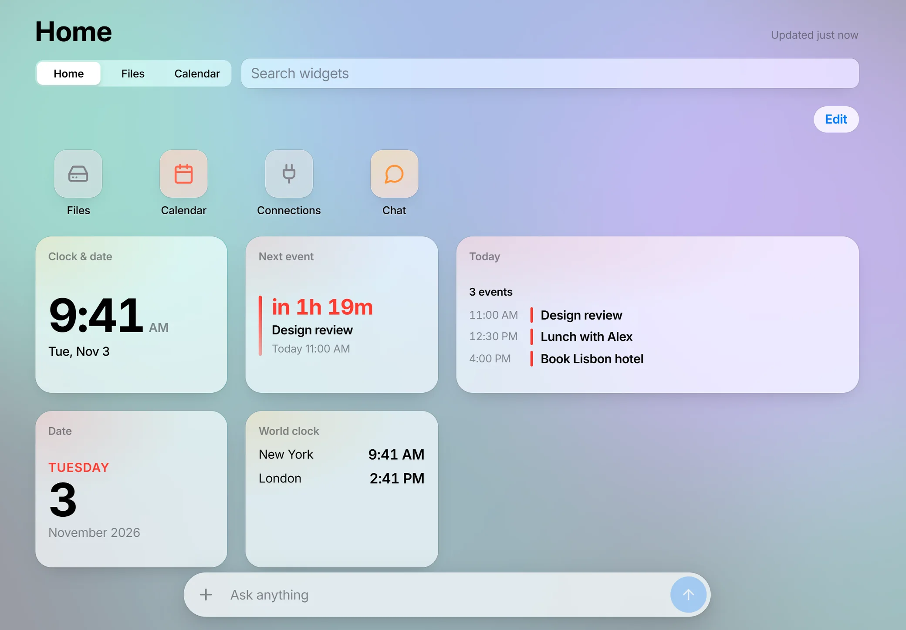
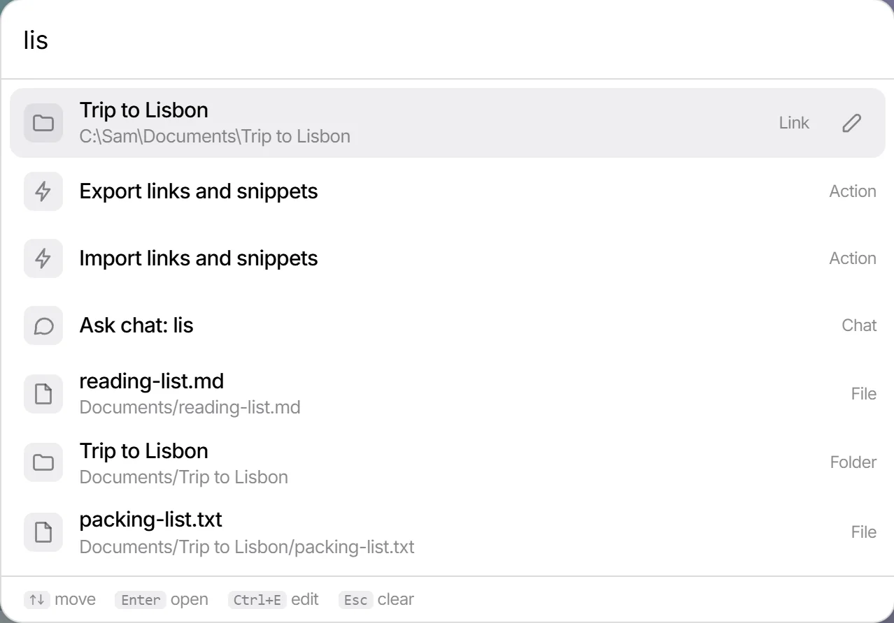
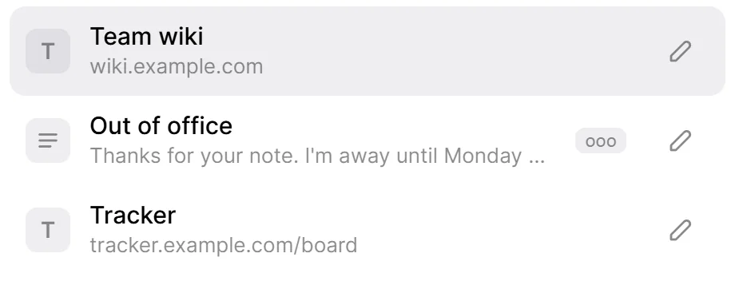
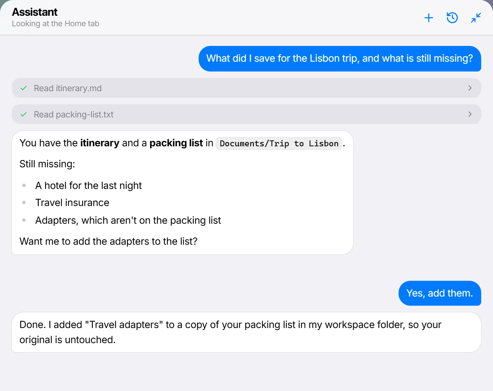

Windows only for now. The installer isn’t signed yet, so Windows may warn you first: choose More info, then Run anyway.
The installer isn’t published yet. This button will download it once it is.


Search
Press CtrlK and start typing.
One bar finds your links, your snippets, the files in your home folder, and LocalHub’s own tabs and actions. What you use most comes first, and anything else can go straight to the chat.
Link
Snippet
File
Folder
Tab
Action
Chat
Links and snippets
Save it once.
Keep web links, folders and Obsidian notes, plus any text you retype. Press Enter to open a link or copy a snippet. Export the lot as one file whenever you like.

Assistant
Ask in plain words.
It answers questions, reads your files, searches the web, keeps your calendar, and works in a real browser you can watch and take over.
Out of the box, it asks before it sends, posts, buys or deletes anything. It runs on your own Claude login or an API key you add.

Your machine
It runs on your PC.
Account
None needed
Who can reach it
This PC, until you change that
Your links, chats and settings
Files on your PC
What you ask the assistant
Goes to the AI you connect
Your look
Make it yours.
Light or dark, your wallpaper, and your choice of widgets in the order you want them on Home.